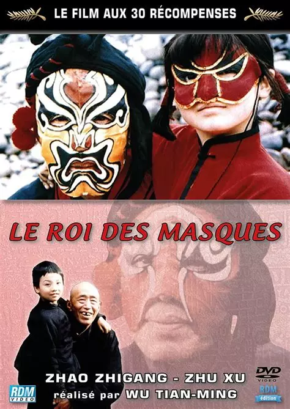
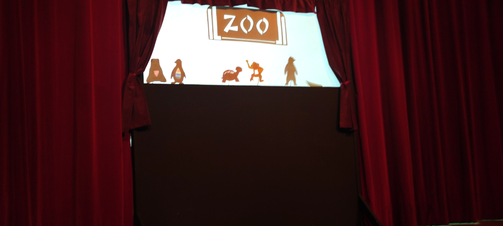
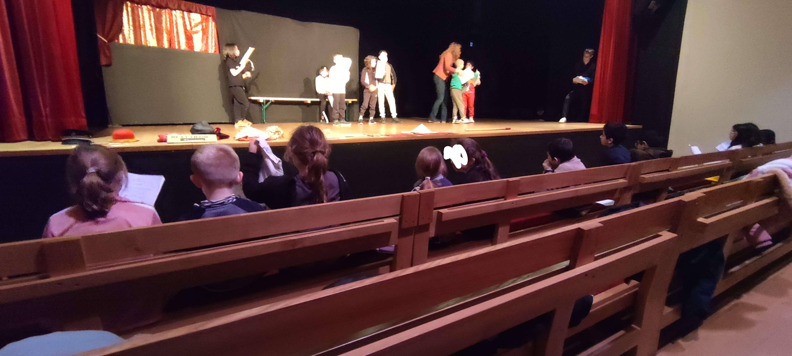

Lundi 10 mars
Aujourd’hui, les classes de Mme Foucher, M. Meignan et M. Champigny sont allées au Ciné Mobile pour voir Le Roi des masques.
Ce film, réalisé par Wu Tianming en 1996, a plongé les spectateurs dans le Sichuan des années 1930.
Wang, un vieil artiste itinérant, a vécu sur une barque avec son singe, Général.
Connu sous le nom de “Roi des masques”, il a maîtrisé à la perfection le bian lian, un art traditionnel où les masques de soie ont changé en un clin d’œil, créant une illusion presque magique.
Mardi 11 mars
Aujourd’hui, les CE1-CE2 ont créé des marionnettes à métamorphose !
Ils ont visité le musée du Théâtre Forain autour du thème du voyage à travers le monde, explorant plusieurs pays : la France, l’Italie (Venise, Naples), l’Espagne, la Russie et la Chine.
Après cette découverte, ils ont fabriqué une marionnette Arlequin à métamorphose, alliant créativité et savoir-faire.
Un grand merci à Agathe et Stéphanie pour ces belles découvertes et ce moment enrichissant !

Jeudi 13 mars
Ce mardi 11 mars, les élèves de cm2 ont eu l’opportunité de se rendre au musée du Théâtre Forain pour une visite immersive sur le thème du voyage.
En plus de cette découverte, ils ont participé à un atelier de fabrication de marionnettes destinées au théâtre d’ombres. Chacun a conçu sa propre marionnette avant de s’initier à cet art en mettant en scène la pièce "Tousse au zoo."
Une belle expérience mêlant créativité et découverte du spectacle vivant !
Vendredi 14 mars
Aujourd’hui, on fait le Tour du Monde en 80 jours !
Vendredi dernier, nous avons rendu visite à la classe 1 pour qu’ils nous racontent leur sortie au musée du théâtre forain.
Voici un bref résumé de leur expérience :
Ils se sont rendus au musée du Théâtre Forain pour répéter la pièce Le Tour du monde en 80 jours. Chaque scène a été jouée par un groupe d’élèves différent, permettant ainsi à tous de participer et de découvrir le plaisir du théâtre.
Une belle immersion dans l’univers du spectacle vivant !
